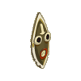
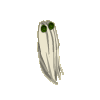
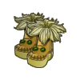
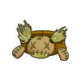
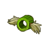

Menu barbok'you

| Niveau 40 | Chapeau Tyron | ||
|---|---|---|---|
| Recettes : | Caractéristiques : | ||
|  | 10 Bulbe malibout 10 Pince de crustorail 2 Pétale malibout 1 Etoffe corailleuse 12 boue du Boo |
+100 soin sur le sort "Ronce Apaisante" +30 CC sur le sort "Larme" Augmente la portée de "la folle" de 3 Désactive la ligne de vue du sort "Poison Paralysant" |
|
| Remarques : | |||
| Niveau 80 | Cape Hitton | ||
|---|---|---|---|
| Recettes : | Caractéristiques : | ||
|  | 20 Etoffe de ouassingue 10 Ailes du bitouf des plaines 10 Plume de fesse du kido 4 Maillot de corps de barbroussa 4 Foulard du sparo 1 Etoffe de gourlo le terrible 16 Queues de scorbute |
Augmente la portée du sort "Tremblement" de 3 +15 dommage sur le sort "Ronce" Augmente la portée du sort "Puissance Sylvestre" de 4 Rend la portée du sort "Poupée Sacrifié" modifiable |
|
| Remarques : | |||
| Niveau 100 | Bottes Hanik | ||
|---|---|---|---|
| Recettes : | Caractéristiques : | ||
|  | 20 Moustaches du mufafah 20 Duvet du kilibriss 10 Plumes de fesse du kido 10 Ailes du bitouf des plaines 2 Crinières fleuries 1 Peau de rasboul majeur 25 Pattes de Wabbit |
+1 PM Augmente la portée du sort "Sacrifice Poupesque" de 2 Augmente la portée du sort "Vent Empoisonné" de 3 Augmente la portée du sort "La Bloqueuse" de 2 Augmente de 1 le nb de lancé max par tour de "Ronce Multiple" |
|
| Remarques : | |||
| Niveau 130 | Ceinture Luthe | ||
|---|---|---|---|
| Recettes : | Caractéristiques : | ||
|  | 30 Bractée de chiendent 28 Sépale de nerbe 24 Calice de fécorce 20 Etamine de floribonde 18 Carpelle de brouture 2 Talon d'achille de l'abrakleur sombre 1 Ecorce de Tynril 2 Dragolait |
Réduit de 2 le cout en PA du sort "Arbre" +10 dommage sur le sort "Feu de Brousse" Augmente la portée du sort "Gonflable" de 3 Reduit de 1 le delai de relance du sort "Ronce Insolente" |
|
| Remarques : | |||
| Niveau 150 | Anneau Pwal | ||
|---|---|---|---|
| Recettes : | Caractéristiques : | ||
|  | 18 Rembourrage de meupette 16 Croupion de bitouf aérien 5 Coco du bitouf aérien 5 Noeud de l'Abrakleur clair 4 Barbe inexistante de Barbroussa 4 Coquille de karskargo 3 Ecorce de Floribonde 1 Chaussette du Kimbo |
Reduit de 3 le delai de relance du sort "Conaissance des Pourpées" +30 CC sur le sort "Ronce Agressive" Reduit de 1 le delai de relance du sort "La Surpuissante" Desactive la ligne de vue du sort "Herbe Folle" |
|
| Remarques : | |||
| 1 Items | Aucun bonus |
|---|---|
| 2 Items | +20 Force / +20 Intelligence / +20 Agilité / +20 Chance / +20 Sagesse +100 Vitalité / +3 Dommages / +3 Soins / +10 prospection |
| 3 Items | +40 Force / +40 Intelligence / +40 Agilité / +40 Chance / +40 Sagesse +200 Vitalité / +7 Dommages / +7 Soins / +20 prospection |
| 4 Items | +70 Force / +70 Intelligence / +70 Agilité / +70 Chance / +70 Sagesse +500 Vitalité / +12 Dommages / +12 Soins / +30 prospection / +1 invocation 5% Rés. neutre / 5% Rés. feu / 5% Rés. terre / 5% Rés. air / 5% Rés. eau |
| 5 Items | +100 Force / +100 Intelligence / +100 Agilité / +100 Chance / +100 Sagesse +800 Vitalité / +20 Dommages / +20 Soins / +40 prospection / +1 invocation 10% Rés. neutre / 10% Rés. feu / 10% Rés. terre / 10% Rés. air / 10% Rés. eau / +1 PA |
Dofus est un MMORPG édité par Ankama." Barbok " est un site non-officiel sans aucun lien avec Ankama.
Toutes les illustrations sont la propriété d'Ankama Studio et de Dofus. Le contenu de ce site a été rédigé initialement par Immortal, il ne s'agit que d'une remise en ligne effectuée par Eternal Games.